How Self-Efficacy and Trust Evolve During LLM-Assisted Writing
Large language models (LLMs) are increasingly used as collaborative partners in writing. However, this raises a critical challenge of authorship, as users and models jointly shape text across interaction turns. Understanding authorship in this context requires examining users' evolving internal states during collaboration, particularly self-efficacy and trust. Yet, the dynamics of these states and their associations with users' prompting strategies and authorship outcomes remain underexplored. We examined these dynamics through a study of 302 participants in LLM-assisted writing, capturing interaction logs and turn-by-turn self-efficacy and trust ratings. Our analysis showed that collaboration generally decreased users' self-efficacy while increasing trust. Participants who lost self-efficacy were more likely to ask the LLM to edit their work directly, whereas those who recovered self-efficacy requested more review and feedback. Furthermore, participants with stable self-efficacy showed higher actual and perceived authorship of the final text. Based on these findings, we propose design implications for understanding and supporting authorship in human-LLM collaboration.
Participants wrote a 30-minute argumentative essay using a custom interface with an embedded LLM assistant.
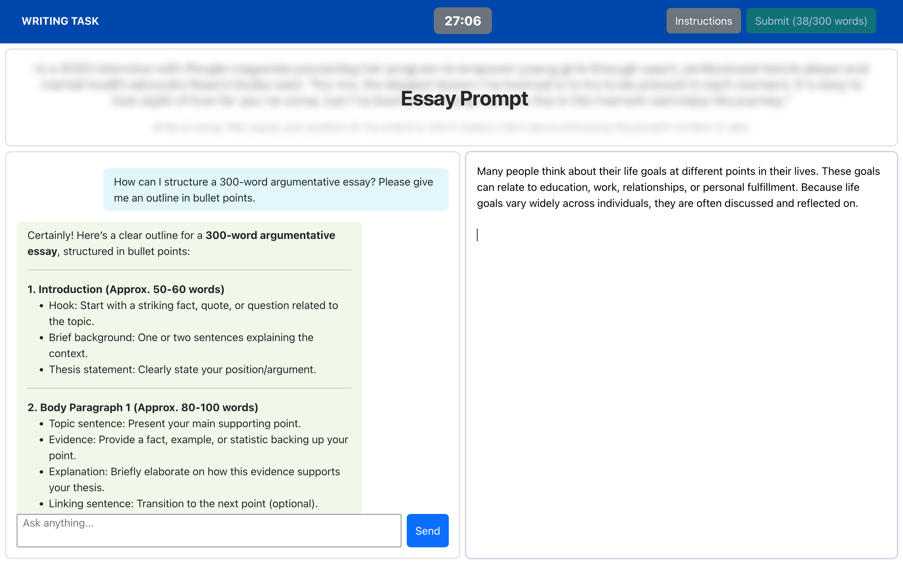
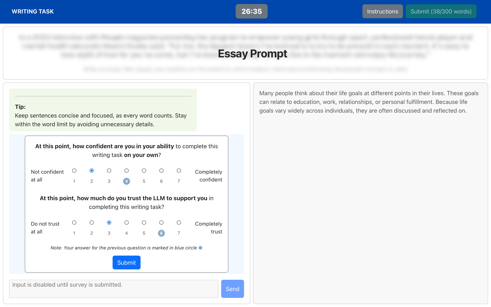
Before sending a new prompt, participants rated their current momentary self-efficacy and trust on a 7-point Likert scale, allowing us to track their trajectories across each interaction turn.
Self-efficacy declined across interaction turns while trust increased. Self-efficacy trajectories began at similar initial levels, and trust acted as a buffer against declines in self-efficacy.
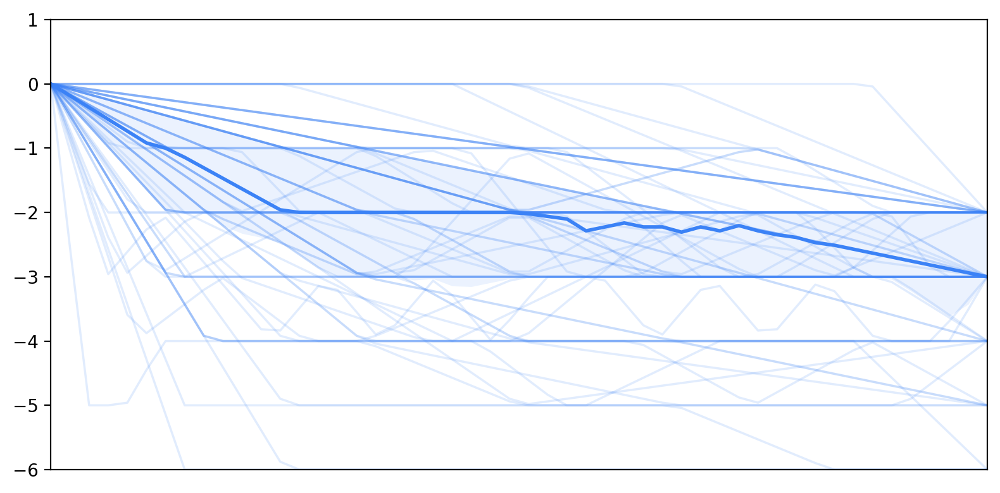
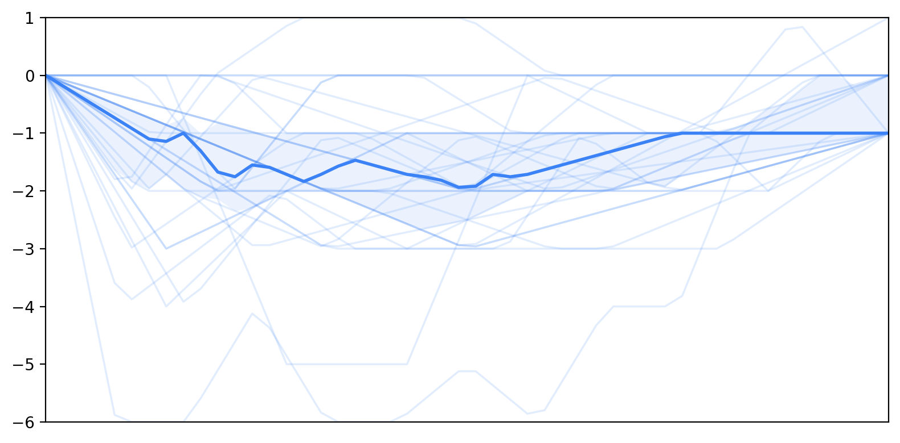
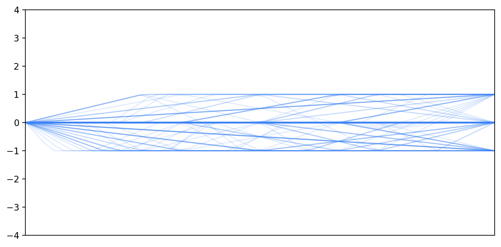
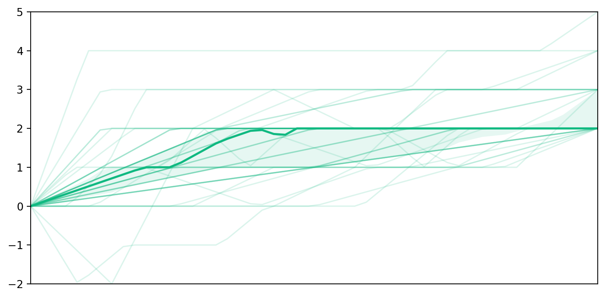
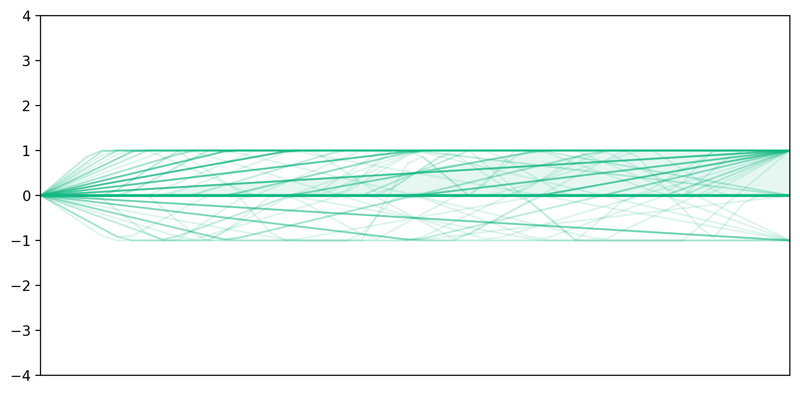
Users with decreasing self-efficacy used significantly more editing prompts. Those who recovered used significantly more reviewing prompts, repositioning the LLM as a critic rather than an editor.
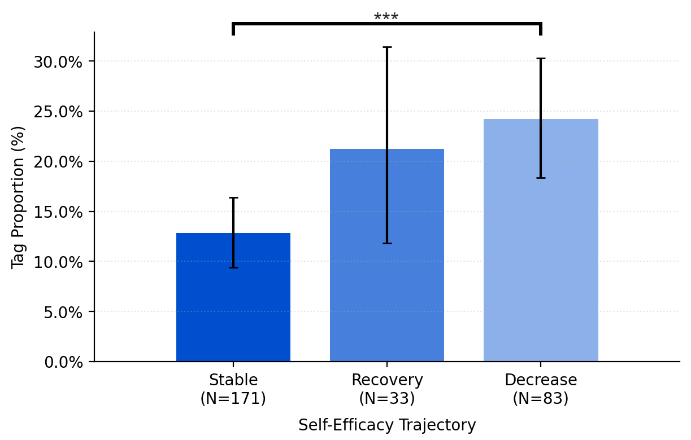
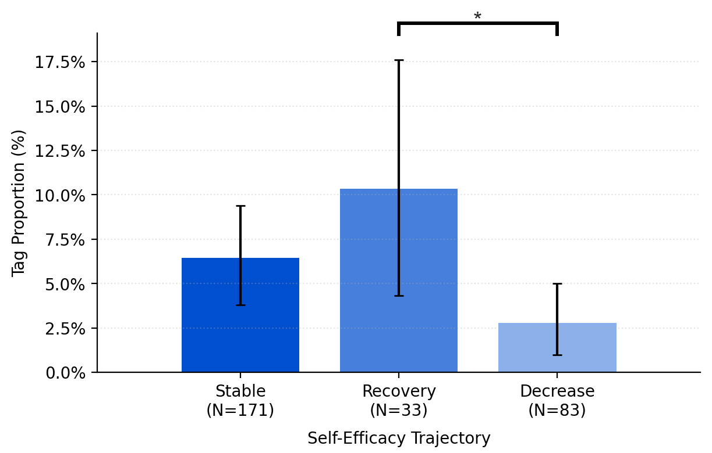
At the transition level, decreasing self-efficacy was marked by repetitive drafting-to-editing and editing-to-editing sequences that progressively handed authorial control to the LLM.
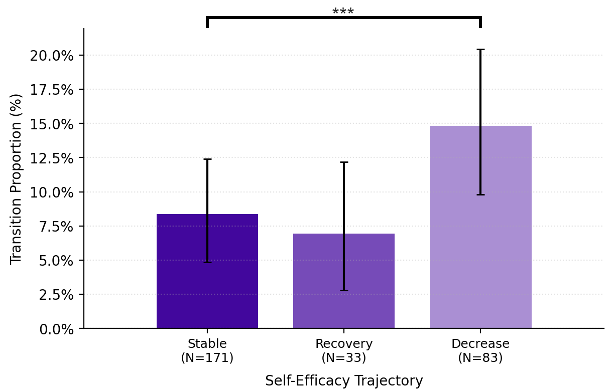
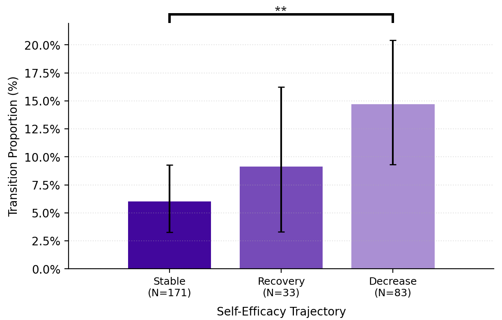
Users who began with lower trust used significantly more information-searching prompts.
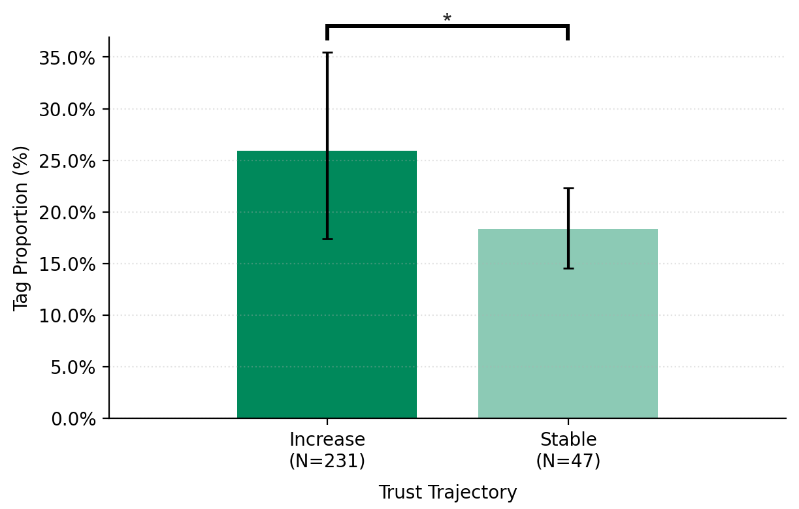
Users with decreasing self-efficacy had significantly greater lexical and semantic overlap with LLM output in their final essays, compared to the stable group.
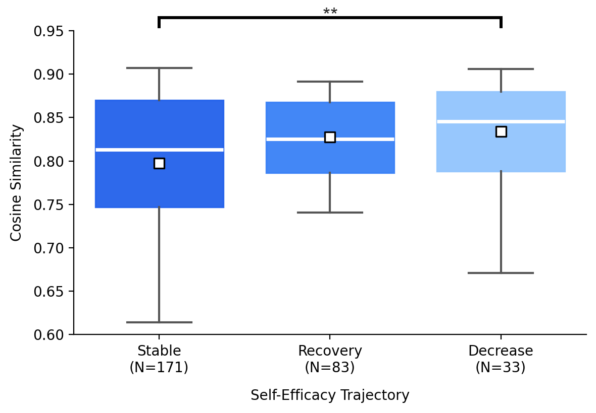
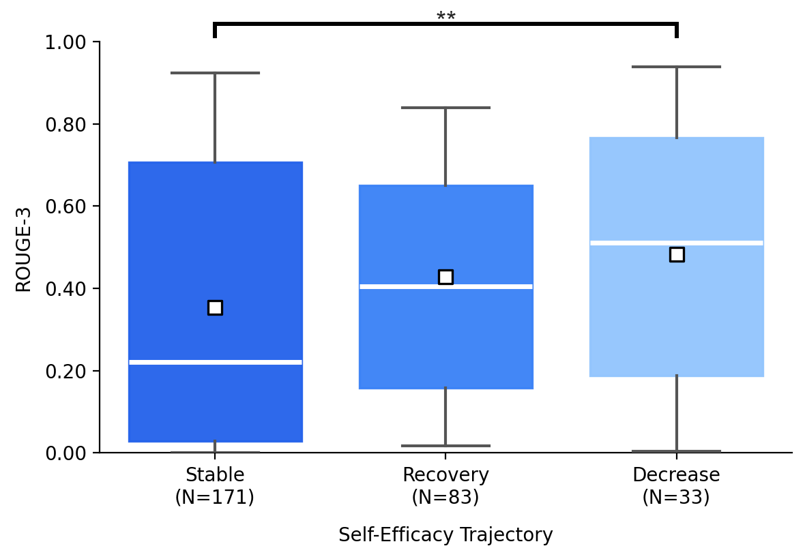
Perceived ownership and agency followed the same hierarchy across all three trajectory groups.
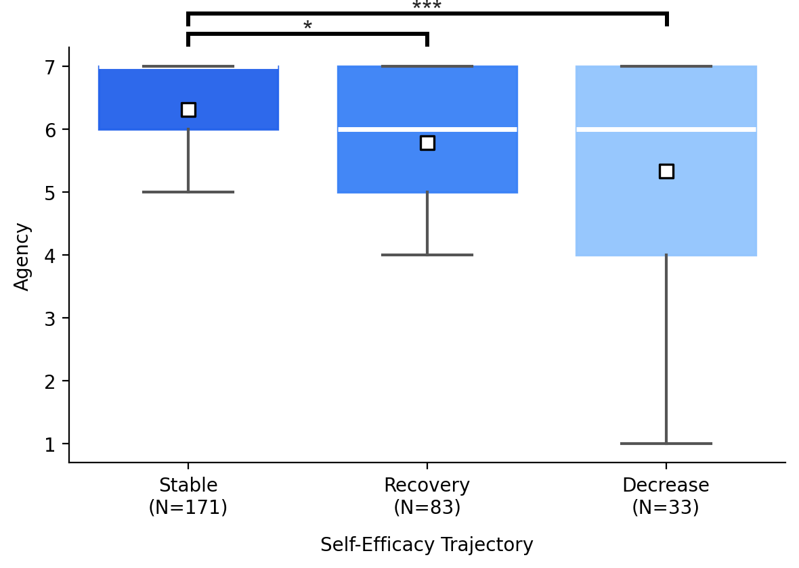
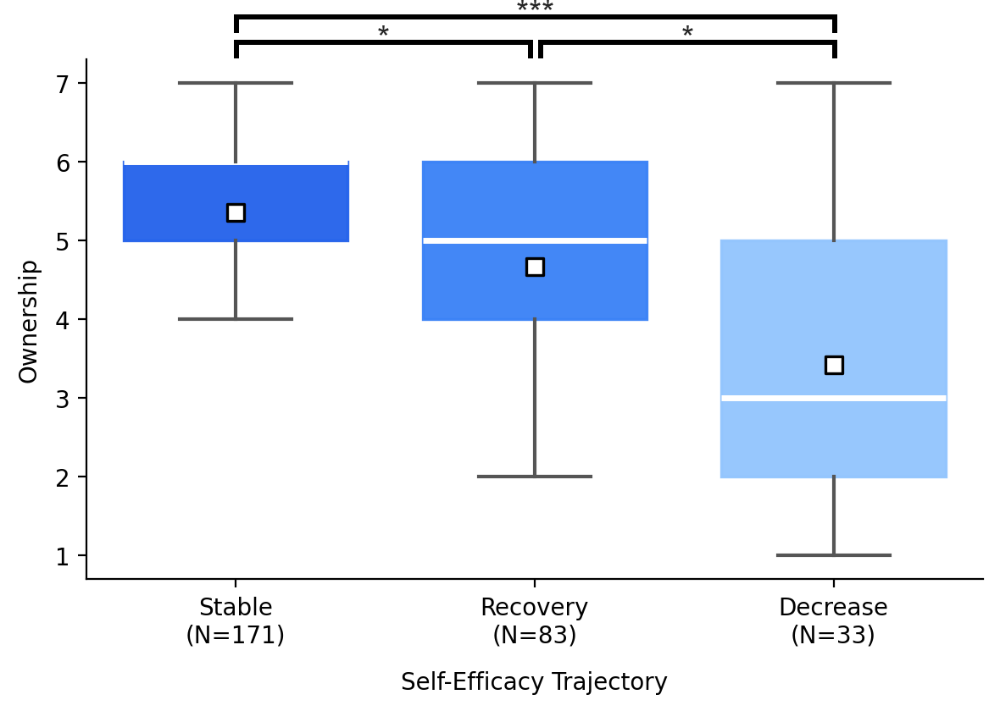
Self-efficacy is not a fixed trait but evolves over the course of interaction. Analyzing within-session trajectories provides a more informative basis than relying on baseline scores alone.
Prompting patterns reflect self-efficacy trajectories. Editing-heavy patterns are associated with decline, while review-oriented prompts are more common in recovery. Lexical and semantic overlap provide complementary signals of how LLM outputs are incorporated.
Because these shifts emerge in cognitively demanding, open-ended tasks where evaluating outputs is difficult in nature, they may extend beyond writing to other domains.
@article{park2026authorship,
title={Authorship Drift: How Self-Efficacy and Trust Evolve During LLM-Assisted Writing},
author={Yeon Su Park and Nadia Azzahra Putri Arvi and Seoyoung Kim and Juho Kim},
year={2026},
eprint={2602.05819},
archivePrefix={arXiv},
primaryClass={cs.HC},
url={https://arxiv.org/abs/2602.05819},
}